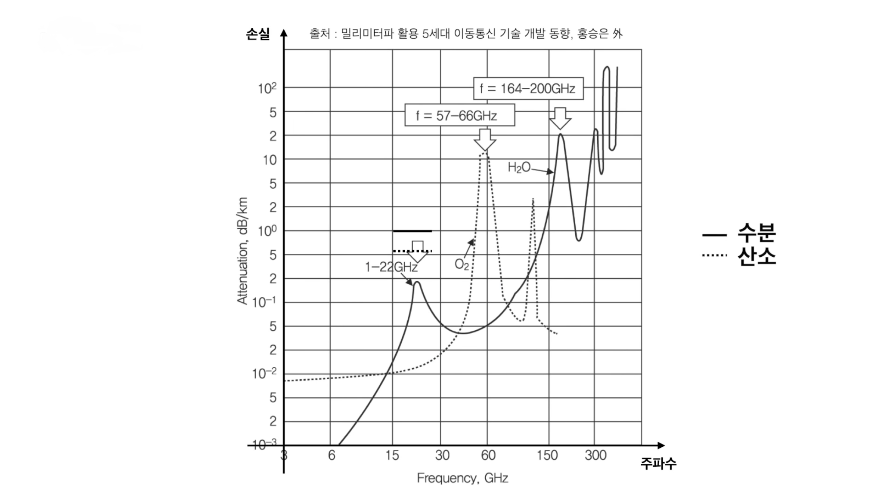
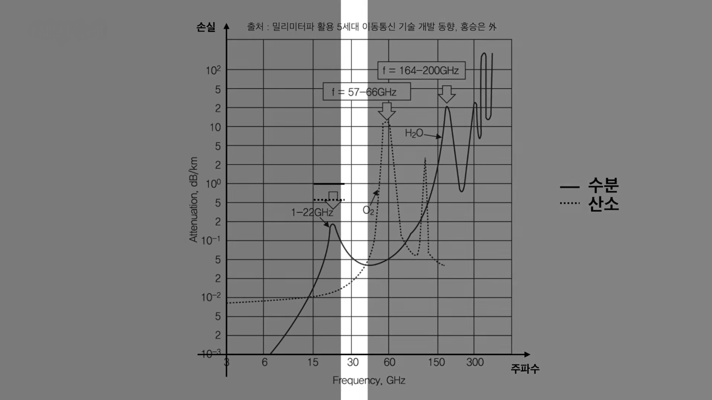
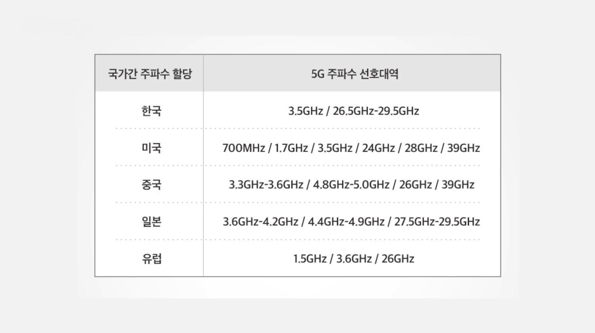
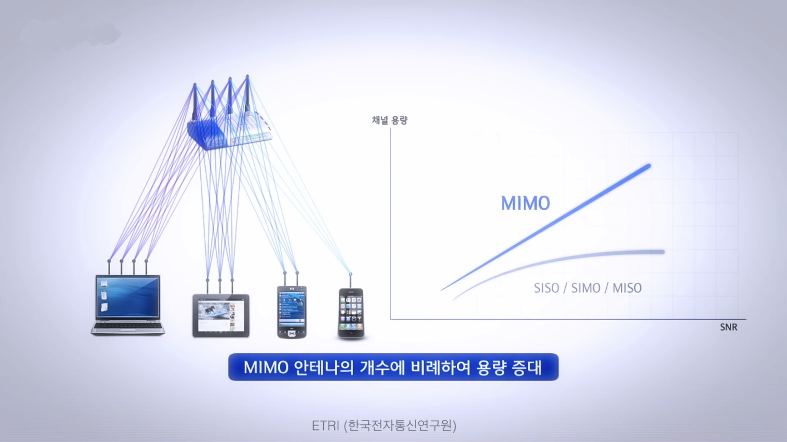
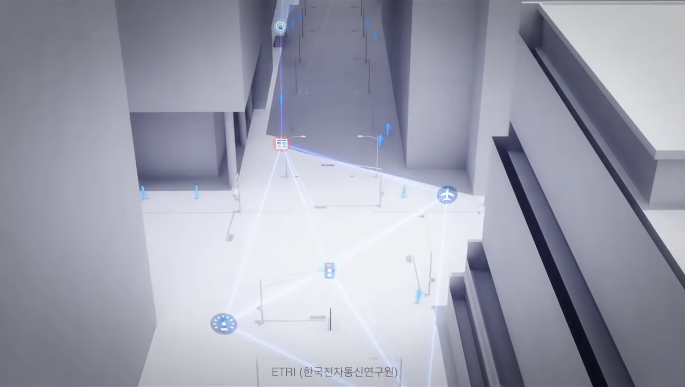

mmWave의 문제점 해결법
1. 수분, 산소에 의한 신호 손실 해결
수분과 산소에 의해 손실이 크기 때문에 이동통신을 위한 주파수로 이용하기에 어려웠습니다. 실제로 주파수 대역 별로 수분과 산소에 의해 손실되는 양을 보여주는 데이터를 봤을 때, 속도 향상을 위해 최대한 높은 주파수를 활용하면서도 수분과 산소에 의한 손실을 최대한으로 피할 수 있는 지점을 찾아보면 28G㎐ 영역대에서 최적의 대안이 있는 것을 알 수 있습니다. 실제로 각국이 선택한 주파수 대역을 보면 28G㎐ 근처임을 알 수 있습니다.


2. 전파 손실과 도심의 장애물에 의한 신호 손질 해결
안테나의 크기가 줄어든 만큼 반대로 안테나의 수를 늘려 수신 면적을 늘립니다. 송신과 수신을 다수의 안테나로 진행해 동일 정보의 중첩 수신을 통해서는 안전성이 향상되고, 서로 다른 정보의 결합을 통해서는 속도가 향상되는 현세대 이동통신의 핵심 기술인 대용량 마이모(MIMO)를 이용합니다. 여기에 전파를 원하는 방향과 경로로 집중해 주는 빔포밍 기술이 더해지면 음영지역에서도 안정적으로 사용이 가능합니다.

